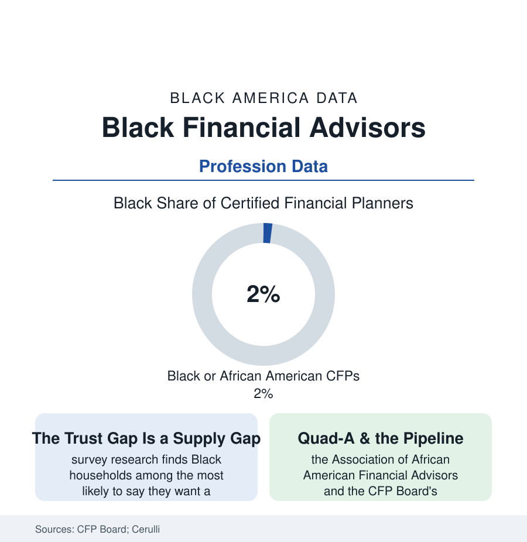

Black Business
The Advisors: Black Wealth Managers at 2% of the Profession That Manages the Money
Fewer than 2% of certified financial planners are Black — while the clientele data show Black households seeking exactly the advice the profession is scarce in. The CFP Board data.

The wealth file's numbers end, eventually, at a desk: somebody advises the household on the retirement account, the insurance stack, the estate documents — and the profession sitting at that desk is, by its own board's count, among the least diverse in this atlas: Black professionals hold fewer than two percent of Certified Financial Planner credentials in the CFP Board's diversity reporting, in a country where the Black households of the census file hold trillions in assets and the survey data show them actively shopping for counsel. This article reads the advice gap.
The Profession's Shape
The advisor economy's structure explains part of its color: the industry's three channels in the Cerulli data (the wirehouse broker-dealers, the independent RIAs, the insurance-channel advisors) each recruit through networks — the profession reproducing itself through referral, fraternity, and the family-client book in the sociological literature's own account — and the economics filter at the door (the eat-what-you-kill first years: the trainee surviving on savings and a spouse's salary while the book builds, a runway priced for households that already have one, the industry's attrition data steepest exactly where the runway is shortest). The pipeline numbers stack along the route: the finance majors of the education file, the licensing and CFP coursework's cost and time (the credential's education, exam, and three-year experience requirements — each stage's Black counts in the Board's funnel reporting), and the representation at the destination firms themselves (the Black advisor's isolation data in the industry surveys — the only-one-in-the-office experience and its measured effect on the retention the Board's diversity center tracks). The clientele data complete the circuit: the Federal Reserve's and the industry surveys' findings that Black households use professional advice at lower rates, hold the advisory relationship for shorter spans, and report — in the trust batteries — the expectation of being underserved by the firms courting everyone else's rollover: an expectation the profession's two percent does nothing to argue with.
The stakes of the gap are measurable in the households' own numbers: the advised-versus-unadvised research (the retirement-plan studies finding professionally advised and default-managed savers carrying more diversified portfolios and fewer catastrophic allocations — the 401(k) record's all-in-one-stock and all-in-cash errors concentrated among the unadvised in the recordkeeper data), the estate file's dependence on a professional's prompt (the will executed because an advisor asked, the beneficiary form corrected at the review meeting — the wealth file's transfer failures so often being paperwork no one was paid to check), and the insurance audit's similar mechanics. Advice, in the data, is less prophecy than hygiene — and hygiene, like every preventive service in this atlas, distributes along the access lines first and the income lines second.
The Counter-Institutions
Against the directory's thinness stands the built alternative in its now-familiar form: the Association of African American Financial Advisors — Quad-A — the profession's Black association, its conferences and chapters the network the mainstream channel did not provide; the Black-owned RIA firms of the business file (the independent shops, some at genuine scale in the industry rankings, advising the athletes, executives, and families of the wealth file — the Form ADV filings' public census of the sector); the HBCU pipeline programs and the CFP Board's own scholarships and mentorship cohorts of the recent years (the Board publishing its diversity counts annually with the self-critical framing of an institution grading its own homework); and the digital tier's disruption data (the robo-advisors and the Black-founded fintech guidance platforms of the tech file — the advice product redesigned for the household the human profession priced out, the hybrid models' growth in the households-the-surveys-count). The demand side's most interesting datum is generational: the younger Black affluent cohort of the wealth file — the highest-earning generation in the census record — reports in the industry surveys the strongest preference for an advisor who shares their background and the most willingness to switch firms to get one: the market signal, in the industry's own research, flashing at the profession's least diverse desk.
Reading the Advisor Data
Two percent of the credential, trillions in the clientele's hands, and a stated preference the supply cannot meet: the advisor file is the business section's version of the pipeline theorem — the gap is not in the wanting. The Board counts its planners every year and publishes the count without flinching. The asset holders of the census file are doing the same arithmetic from the other side of the desk. Somewhere between the two counts is a profession being rebuilt — by its associations, its independents, and its own diversity center — one credential at a time.
More in Black Business
Black-Owned Businesses: Counts, Receipts, and the Representation Gap
About 161,000 Black-owned employer firms and three million solo ventures: how the Census Bureau counts Black business ownership, where firms concentrate, and the gap between population share and business share.
Black Median Net Worth: The Wealth Gap in Federal Reserve Data
The Federal Reserve puts Black median family net worth at $44,900, against $285,000 for White families — about 16 cents on the dollar. The widest gap in economic data.
Black Buying Power: The $1.8 Trillion Consumer Economy
Black buying power is estimated at about $1.8 trillion — larger than the economy of most nations. What the figure measures, who produces it, and what it buys.
Source: CFP Board diversity reporting; Association of African American Financial Advisors (Quad-A); Cerulli Associates; Federal Reserve Survey of Consumer Finances.